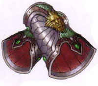
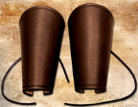
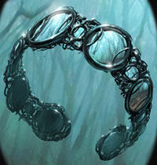

Gli
oggetti magici generici possono essere suddivisi in base
alla potenza dell'incantamento magico. I poteri magici, quindi possono essere suddivisi in:
|
POTENZA DELL'INCANTAMENTO |
PUNTI ESPERIENZA |
|
Minor Enchantment* |
da 75 a 375 punti esperienza |
|
Lesser Enchantment
|
da 500 a 999 punti esperienza |
|
Superior Enchantment |
da 1000 a 1499 punti esperienza |
|
Greater Enchantment |
da 1500 a 2999 punti esperienza |
|
Extraordinary Enchantment |
da 3000 punti esperienza in poi |
* si
noti che i Minor Enchantment sono incantamenti magici minori per i quali sono
applicate specifiche regole non riportate nella relativa sezione (LINK).
I
gioielli magici possono essere suddivisi a loro volta in numerose
sottocategorie di oggetti magici.

BRACCIALI DIFENSIVI
I
bracers
sono grossi bracciali di cuoio o di metallo che si indossano sull'avambraccio
per difenderlo dai colpi dei nemici. I
bracciali di cuoio
hanno un fattore di
protezione pari al 5%, un
peso pari a 1,5 libbre
ed un costo medio di 10
corone (tiro salvezza come
pelle o cuoio). I
bracciali di metallo hanno
un fattore di protezione
pari al 7%, un
peso pari a 3 libbre
ed un costo medio pari a
30 corone (tiro salvezza
come metalli dolci). Quando chi indossa questi bracciali riceve un colpo critico
al braccio (ad esclusione
della mano) vi sarà il
50% di possibilità che sia
colpito il bracciale
riducendo il critico.
In tal caso, però, il bracciale dovrà effettuare un
tiro salvezza contro rottura
pari a 8 per i
bracciali di metallo
e pari a 9 bracciali di
cuoio per i per
evitare la rottura. I bracciali non si considerano come una corazza e non
impongono penalità ai movimenti ed al lancio degli incantesimi.
Si noti che qualora sia
indossata anche una corazza sarà applicata unicamente la riduzione migliore tra
quella concessa dai bracciali e quella concessa dalla corazza fermo restando la
necessità di verificare la rottura di quest'ultimi.
Una creatura può indossare
un solo oggetto di questa categoria, la particolarità di
tali oggetti è che questi
bracciali magici devono essere indossati entrambi perché il loro incantamento
funzioni (se uno dei
bracciali viene rimosso, oppure si rompe, l'altro diviene irrimediabilmente
inservibile).
|
Bracers of Defence |
|
Variabile |
| Natura |
Magica |
Scuola di
Riferimento |
Abjuration |
|
 |
Chi indossa questi
bracciali viene difeso da un invisibile ed inconsistente campo di
forza che gli garantisce una classe armatura base come se costui
stesse indossando, a tutti gli effetti, un'armatura magica. A
seconda della potenza dell'incantamento i bracciali conferiscono una
determinata classe armatura. Si noti che essendo a tutti gli effetti
considerabili come una corazza magica, il punteggio di classe
armatura concesso non sarà cumulabile con quello eventualmente
ottenuto indossando una qualsiasi corazza, comune o magica (in tal
caso si applicherà unicamente il beneficio migliore), né con quello
concesso dagli anelli magici di protezione.
|
|
NOME DELL'INCANTAMENTO |
CLASSE ARMATURA |
POTENZA DELL'INCANTAMENTO |
|
Bracers of
Least Defence |
AC 8 |
Lesser Enchantment (650 xp,
6.500 gp) |
|
Bracers of
Lesser Defence |
AC 7 |
Superior Enchantment
(1000 xp, 10.000 gp) |
|
Bracers of
Moderate Defence |
AC 6 |
Greater Enchantment (1500
xp, 15.000 gp) |
|
Bracers of
Superior Defence |
AC 5 |
Greater Enchantment (2200
xp, 22.000 gp) |
|
Bracers of
Greater Defence |
AC 4 |
Extraordinary Enchantment
(3000 xp, 30.000 gp) |
|
|
Bracers of
Deflection |
|
Superior Enchantment
(1000 xp, 10.000 gp) |
| Natura |
Magica |
Scuola di
Riferimento |
Abjuration |
 |
Questi bracciali
incantati
possono essere
usati validamente solo dagli appartenenti ad una classe di combattenti
(warriors).
Se un guerriero indossa questi bracciali costui potrà nel corso di
un combattimento
provare a deflettere
con gli stessi (anche senza impugnare un'arma adeguata) un attacco
utilizzando le regole dell'arte di combattimento "Arte del Deflettere i Colpi". In
particolare, i bracciali avranno da 1 a 5 possibilità di deflettere tale
attacco. Si noti che questi bracciali non donando la conoscenza dell'arte di
combattimento non permettono a chi li utilizza di migliorare le
possibilità utilizzando il colpo di combattimento "deflessione
migliorata". Se, inoltre, chi utilizza questi bracciali possiede l'arte
di combattimento "Arte del Deflettere i Colpi" non potendosi
cumulare gli effetti previsti dovrà decidere, nel corso di ogni
round di combattimento, se usare la propria arte o il potere magico
dei bracciali (in pratica il primo metodo utilizzato impedirà di
usare quello alternativo). Questi bracciali, inoltre, ottengono un
bonus costante di +1 a tutti i tiri salvezza contro rottura (bonus
cumulabile a quello ottenuto per l'incantamento posseduto). |
|
|
Bracers of Vital
Coverage |
|
Greater
Minor Enchantment (375 xp, 3.500 gp) |
| Natura |
Magica |
Scuola di
Riferimento |
Abjuration |
|
 |
Questo bracciale deve
essere in semplice cuoio o pelle. Chi indossa questi bracciali
è circondato costantemente da piccoli
ed invisibili campi di forza. Tali campi di forza possono ridurre i
rischi relative ai colpi critici subiti. Se la creatura protetta
subisce un colpo critico, durante l’efficacia della magia, il tiro
per determinare l’intensità del critico sarà ridotto del 5%. Si noti
che questa riduzione non può cumularsi con altre riduzioni dovute
sia alla magia (come ad oggetti magici) che a protezioni fisiche
(come coperture delle zone vitali), qualora il personaggio disponga
di più protezioni sarà applicata sola quella che fornisce il bonus
migliore. |
|
BRACCIALI ORNAMENTALI
Oltre ai
bracciali difensivi esistono bracciali sono meramente ornamentali che non hanno
alcuna finalità difensiva. Il
bracciale ornamentale,
infatti, è un
pezzo di gioielleria che si indossa attorno al polso. I
bracciali possono essere costruiti usando cuoio,
metalli, corde, pietre, legno o conchiglie. I bracciali, in
alcuni casi, sono utilizzati come strumento di identificazione (in questo caso
al loro interno sono incise tutte l'informazioni necessarie). Alcuni bracciali,
costruiti per essere indossati sul braccio, sono di dimensioni leggermente
maggiori.
Quando si trova un
bracciale si tiri 1d100
per determinarne la tipologia:
01-33
Bracciale da braccio (peso 0,3 libbre),
04-100
Bracciale da polso (peso 0,2 libbre).
Una creatura può indossare
un solo oggetto di questa categoria.
Qualora una creatura indossi più di un bracciale ornamentale incantato il
potenziale degli stessi andrà in conflitto neutralizzandosi fino a che tale
situazione permarrà (i bracciali ornamentali continueranno a risultare incantati
ma non potranno attivare i loro poteri). Il potere magico dei bracciali
ornamentali riprenderà vigore non appena risulterà indossato uno solo di questi
oggetti magici.
|
Bracelet of
Mirrors |
|
Superior Enchantment
(1100 xp, 11000 gp) |
| Natura |
Magica |
Scuola di
Riferimento |
Abjuration |
|
 |
Questo bracciale deve
essere costruito in metalli lucenti come l'argento e con pezzi di
cristallo e gemme che sono in grado di ricreare l'effetto di tanti
piccoli specchi specchi. Chi indossa questo bracciale
ornamentale è difeso dagli attacchi di energia a distanza che sono
rivolti contro di lui indipendentemente dalla loro fonte (si pensi a
poteri speciali, effetti di oggetti magici, abilità naturali od
incantesimi). La protezione funziona solo su attacchi di tipo
energetico (si pensi agli attacchi elementali) che non siano
conseguenze di attacchi in corpo a corpo. La protezione, quindi, non
si applicherà contro gli attacchi di tipo fisico né contro i danni
energetici che sono la conseguenza diretta di attacchi di tipo
fisico. La protezione si applicherà, dunque, ai soli attacchi a
distanza di tipo unicamente energetico che siano puntati
direttamente contro chi indossa il bracciale. La protezione,
infatti, non si attiverà nei confronti di attacchi od effetti
generici ad area. Quando chi indossa questo bracciale è vittima di
un attacco energetico a distanza puntato contro di lui, costui
riceverà unicamente il 50% dei danni normalmente previsti
dall'attacco (riduzione effettuata prima di ogni altra riduzione o
tiro salvezza), inoltre, chi ha effettuato l'attacco vedrà
reindirizzarsi verso sé stesso parte dell'energia utilizzata sempre
che il raggio dell'attacco permetta di effettuare il percorso avanti
ed indietro. Se ciò si verifica, la fonte dell'attacco energetico (o
chi ha lanciato la relativa magia) subirà il 50% dei danni
dell'attacco avendo diritto alle comuni riduzioni e tiri salvezza
applicabili contro lo stesso.
|
|
COLLANE
Le
collane sono oggetti ornamentali. Ogni creatura può indossare intorno al collo un'unica
collana magica. Le collane magiche non deono essere confuse con gli amuleti
magici (link) i quali possono essere eventualmente agganciati ad una collana
magica (queste due tipologie di oggetti magici, quindi, possono essere indossati
contemporaneamente). Qualora una creatura indossi più di una collana il
potenziale magico delle stesse andrà in conflitto neutralizzandosi fino a che
tale situazione permarrà (gli oggetti continueranno a risultare incantati ma il loro potere
magico sarà sospeso).
Ogni
volta che chi indossa una collana magica subisce
un critico al
collo (non quindi un
critico al torace) vi è il
50% di possibilità che la collana
sia stata colpito dovendo
superare un tiro salvezza
contro rottura pari ad 10.
Questo tiro va ripetuto per ogni collana indossata ed è diverso dal tiro che
deve essere effettuato per gli amuleti.
|
Necklace of the
Arachnids |
|
Greater Enchantment (1500
xp, 15.000 gp) |
| Natura |
Clericale (Kalian) |
Scuola di
Riferimento |
Alteration |
 |
Questa collana
incantata dona a chi la indossa in modo costante alcuni poteri
magici.
* Se chi la indossa utilizza una delle seguenti armi da corpo
a corpo Bone Dagger, Jambiya e Whip,
i suoi attacchi saranno considerati in ogni caso velenosi e capaci di
iniettare nel corpo della vittima il seguente veleno:
Tipologia Insinuativo,
Onset 1 round,
Effetti
0/8,
Delay 2,
Tiro Salvezza
senza modificatori,
Assuefazione
nessuna. Si noti che non sarà
applicato al tiro salvezza il modificatore dovuto alla differenza di
livello tra la vittima e chi indossa questa collana magica.
* Qualsiasi
creatura appartenente alla categoria dei ragni (sottocategoria dei
parassiti) avvertirà una
sensazione di repulsione nei confronti di chi indossa questa
collana. Qualora costoro, quindi, desiderino attaccare in corpo a
corpo, con attacchi fisici o con anche l'uso delle armi, la creatura
che indossa la collana dovranno superare un tiro salvezza su magia.
Il tiro salvezza va eseguito una sola volta al primo tentativo di
attacco effettuato nel round. Se il tiro salvezza fallisce la
creatura non potrà effettuare l'attacco e perderà la relativa
azione, inoltre la creatura non potrà effettuare alcun ulteriore
attacco nei confronti della creatura protetta nel medesimo round di
combattimento. Il tiro salvezza va ripetuto ad ogni successivo
round. Non appena, però, la creatura supera il tiro salvezza costei
sarà libera di attaccare la creatura protetta per tutto il resto del
medesimo combattimento (la protezione si riattiverà nei confronti di
quella creatura solo in un eventuale successivo e diverso
combattimento). Si noti che la protezione è applicata solo agli
attacchi in corpo a corpo non essendo limitati in alcun modo gli
attacchi a distanza e l'utilizzo di poteri speciali ed incantesimi
che non richiedano di toccare la creatura protetta.
* La creatura sarà in
grado di camminare e spostarsi in posizioni occupate da ragnatele
senza subire alcuna penalità di movimento e senza rischiare di
restare invischiata nelle stesse. In pratica si sposterà tra le
ragnatele come se le stesse non esistessero. Le ragnatele non sono
disturbate od in altro modo alterate dal passaggio della creatura
Parimenti, la creatura non subirà alcuna penalità per essere stata
colpita da ragnatele attraverso l'uso di poteri speciali, abilità
particolari od incantesimi.
|
|